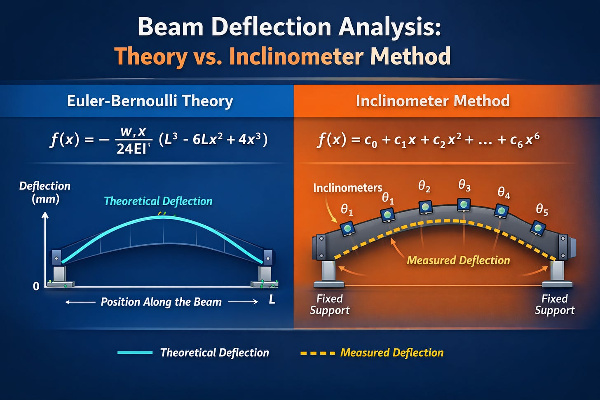

Monitorare lo spostamento di una trave tramite inclinometri
Formule di riferimento
\[f(x) = c_0 + c_1 x + c_2 x^2 + \dots + c_n x^n\]
\[f(x) = c_0 + c_1x + c_2x^2 + c_3x^3 + c_4x^4 + c_5x^5\]
\[\theta(x) = f€™(x)\]
\[f(x) = c_0 + c_1x + c_2x^2 + c_3x^3 + c_4x^4 + c_5x^5 + c_6x^6\]
\[f\]
\[(1)\quad f(0) = c_0 = 0\n\]
\[(2)\quad f(L) = c_0 + c_1 L + c_2 L^2 + c_3 L^3 + c_4 L^4 + c_5 L^5 + c_6 L^6 = 0\n\]
\[(3)\quad f\]
\[(4)\quad f\]
\[(5)\quad f\]
\[(6)\quad f\]
\[(7)\quad f\]
\[c_1 = \theta_1\]
\[f(x) =-\frac{w \cdot x}{{24 \cdot E \cdot I}} \left( L^3 - 6Lx^2 + 4x^3 \right)\]
Impostazione tecnica
In questo articolo viene descritto il metodo per la ricostruzione della deformata di una trave semplicemente appoggiata a partire dalle misure di rotazione fornite da inclinometri installati lungo l'asse della trave.
L'idea di base consiste nell'esprimere l'abbassamento verticale della trave mediante una funzione polinomiale, definita separatamente per ciascuna trave. Nel caso di ponti, ciò che verrà descritto viene spesso utilizzato in fase di collaudo statico dell'opera oppure durante il suo monitoraggio continuo.
Formulazione matematica
Per una generica campata, se sono note n+1n+1n+1 condizioni al contorno indipendenti, la funzione di abbassamento può essere approssimata tramite un polinomio di grado n:
Ad esempio, un polinomio di quinto grado assume la forma:
I coefficienti c i vengono determinati imponendo le condizioni al contorno, che nel caso in esame sono:
- spostamento verticale nullo in corrispondenza degli appoggi;
- rotazioni note nei punti in cui sono installati gli inclinometri.
Il problema si riduce quindi alla risoluzione di un sistema lineare, i cui termini noti sono forniti direttamente dalle misure sperimentali.
Impostazione del sistema di equazioni
Ogni inclinometro misura la rotazione locale della trave, che corrisponde alla derivata prima della funzione di abbassamento:
Si consideri, a titolo di esempio, una campata di lunghezza L su cui sono installati 5 inclinometri. Le condizioni al contorno complessive sono:
- 2 condizioni di spostamento (abbassamento nullo agli appoggi);
- 5 condizioni di rotazione (fornite dagli inclinometri).
In totale si hanno quindi 7 condizioni al contorno, che richiedono un polinomio di grado 6:
La derivata del polinomio è:
Condizioni sugli appoggi
Imponendo l'abbassamento nullo agli estremi della campata si ottengono le prime due equazioni:
Condizioni sugli inclinometri
Si assumono le seguenti posizioni dei sensori:
- Sensore 1: x=0
- Sensore 2: x=L/4
- Sensore 3: x=L/2
- Sensore 4: x=3L/4
- Sensore 5: x=L
Esplicitando, ad esempio, la terza equazione:
e analogamente per le altre posizioni.
Ricostruzione della deformata
Una volta costruito il sistema di 7 equazioni lineari nelle 7 incognite c0,€¦,c6, è sufficiente risolverlo per ottenere i coefficienti del polinomio interpolante. La funzione f(x) così determinata consente di ricostruire l'intera deformata della trave lungo la campata, a partire esclusivamente dalle misure inclinometriche.

Esempio numerico
Di seguito si riporta un esempio di confronto tra la deformata ricostruita con l'algoritmo descritto e la soluzione teorica di Eulero-Bernoulli.
DATI:
w = 8 N/mm carico
E = 210000 MPa
b = 400 mm
h = 1200 mm
I = b*h^3/12 mm4
L = 51800 mm
i sensori sono stati ipotizzati alle seguenti posizioni:
s1: 0
s2: L/4
s3: L/2
s5: 3L/4
s4: L